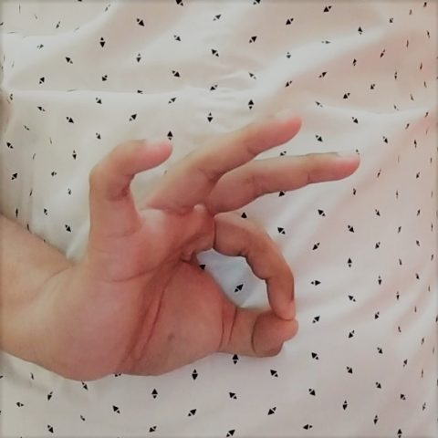
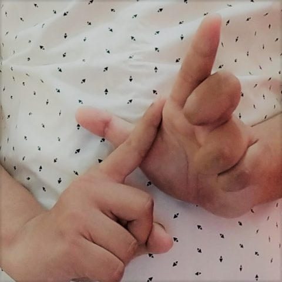

Validation
Used to choose between models
—
— of — correct · macro-F1 —
Personal ML project · Indonesian Sign Language
A 2.6M-parameter YOLO11n detector recognises all 26 letters of the Bahasa Isyarat Indonesia alphabet, as still handshapes, from a single camera frame. It runs on your device with ONNX Runtime Web, so no video is uploaded, and every accuracy figure below comes from images the model never trained on.
Sign one letter at a time, about an arm's length from the camera, with both hands in view when the letter uses two. Hold a letter steady for a second to type it; lower your hands between two identical letters.
Start the camera, upload a photo, or pick a sample letter below.
Detected letter
On first use the demo downloads the model (10.5 MB) and the ONNX Runtime engine (11 MB); after that, everything runs on this device.
Confidence —
0%60%: below this it says “not sure”
Runners-up
Typed text
Frames are processed inside your browser and are never sent anywhere. Besides this page, the only downloads are its fonts, the model and the ONNX Runtime library.
Each photo gets one answer: the most confident box. A photo with no box counts as wrong. The model was chosen using the validation set only; the test set was scored once, after that choice.
Validation
Used to choose between models
—
— of — correct · macro-F1 —
Held-out test
Scored once, after the choice
—
— of — correct · macro-F1 —
Unseen signer
A different person and backgrounds
—
— of — correct · macro-F1 —
The stronger the orange, the more mistakes; grey means every photo of that letter was right. Hover or focus a cell for the details, or open the table.
The mistakes are not spread evenly. They sit on a few letters, and the reasons are specific.
—


In this signer's photos, O is a ring made by the thumb and index finger while the other three fingers stay up; in the training photos the fingers curl together into one ring. A model can only learn the variants it is shown, and the training set has one way of signing each letter. More signers, not more epochs, is the fix.
—
M and N are both signed with fingers laid across the other palm; the difference is one finger. That made input resolution the one experiment worth running on top of the baseline: the same model and recipe at 416 instead of 320 pixels.
—
Same splits, same one-answer-per-photo rule. The detector is the one the demo ships.
Sizes and timings for the detectors are measured on the exported ONNX files (median of 50 runs, ONNX Runtime on an Intel i5-11400H laptop CPU). The landmark baseline extracted one hand per photo, but many BISINDO letters use two hands, and it counts a photo as wrong when no hand is found.
Most of the work went into making the numbers trustworthy, not into the model.
The public dataset (— photos) held — exact duplicates and — photos that sat in both train and validation. — of validation photos were near-copies of training photos, because augmentation had been applied before the split.
Photos were clustered by perceptual hash into — groups, and whole groups went to train, validation or test (— / — / —). Near-copies in validation fell to —. YOLO11n at 320 px scored mAP50-95 — on the leaky split and — on the clean one.
YOLO11n from COCO weights, 50 epochs at 320 and at 416 px input, AdamW with a cosine schedule and mild augmentation. Horizontal flips stay off: a mirrored sign is not guaranteed to be the same letter.
One change at a time, compared on validation only. The test split stayed untouched until the model was frozen.
312 photos of a different signer against three backgrounds, published under CC0, played no part in training or model choice.
Exported to ONNX and run with ONNX Runtime Web. On camera, the app takes the vote of the last 8 frames and only types a letter that wins 6 of them at 60% confidence or more.